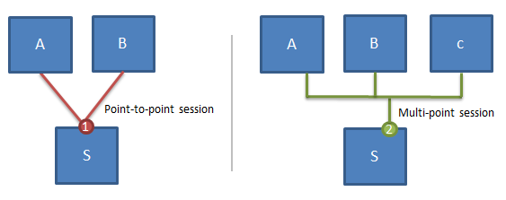
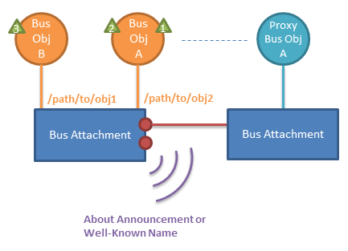

Core Framework
This section describes the AllJoyn™ Core concepts. A base high-level understanding is suggested for anyone developing AllJoyn applications, even if the application is only using AllJoyn Service Frameworks.
Bus Attachment
AllJoyn Applications use and interact with the AllJoyn network by first instantiating the AllJoyn Bus Attachment object and using that object to connect to the AllJoyn Router.
Advertisement and Discovery
AllJoyn applications can advertise its services via two mechanisms: About Announcements and Well-Known Name. Depending on available transports, the AllJoyn framework will use different mechanisms to ensure that the application can be discovered by other AllJoyn applications. For IP-based transports, mDNS and a combination of multicast and broadcast UDP packets are used.
About Announcements are the recommended mechanism for advertising. It provides a common way for applications to advertise a consistent set of metadata about the application to intersted parties, such as make, model, supported interfaces, a graphical icon, and much more.
Well-Known Name is a more primitive mechanism for applications to announce and discover each other. It is the mechanism that About Announcements use. It is recommended for an application to use About Announcements unless there is a speicifc need for this lower-level functionality.
In both cases, the process of discovery returns a list of AllJoyn applications identified by its UniqueName. This value is used to subsequently create sessions for further communications.
Learn more about About Announcements.
Session and Port
The AllJoyn framework takes care of creating connections between different AllJoyn applications. Typically, an application that is offering a service advertises itself through About Announcements. A remote application, upon discovering this application (and its UniqueName), can create a session, a process called JoinSession. The application offering the service has the option of accepting or rejecting the JoinSession request.
A session can either be point-to-point or multi-point. Point-to-point sessions allow one-to-one connection, while multi-point allow a group of devices/applications to communicate on the same session.
Sessions are created on a specific port. Different ports allow for a variety of point-to-point and multi-point connection topologies. In the figure below, on the left side, both A and B have a point-to-point connection to S on port 1. On the right side, A, B, C, and S are all connected on a multi-point session on S's port 2.

BusObject
AllJoyn applications communicate with one another via the BusObject abstraction. This abstraction maps well with object-oriented programming concepts where objects are created with well-defined interfaces. Typically, an application that is offering a service creates a BusObject. Remote applications can effectively remotely open the BusObject and call methods on it, similar to a remote procedure call.
A BusObject can implement a set of interfaces. Each interface clearly defines a set of BusMethods, BusProperties, and BusSignals. BusMethods allow a remote entity to call a method. BusProperties can be get and set. BusSignals are signals emitted from the application offering the service.
A BusObject is attached at a specific bus path. This allows for greater flexibility as the same object can be attached to different bus paths for different purposes. For example, if an application is implementing a service for a stovetop, the StoveBurner BusObject can be attached to multiple bus paths like '/range/left', and '/range/right' can be created to allow for controls to individual stove burners.
A ProxyBusObject is the object that is created by the remote application to gain access to the BusObject.
Summing up, an application offering a service implements a BusObject to expose access to its services. A remote application creates a session with this application, and connects to its BusObject on a specific object path by creating a ProxyBusObject. Then, it can call BusMethods, access BusProperties, and receive BusSignals.

Sessionless Signal
A Sessionless Signal is a mechanism used to receive signals without having to manually create a session. Under the hood, it uses the Well-Known Name advertise the existence of a new signal. The remote entity automatically creates a transient session, the signal data is received, and the session is torn down. AllJoyn Core APIs provide this abstraction.
Introspection
Introspection is built into the AllJoyn framework. APIs exist to easily introspect a remote AllJoyn application to discover its object paths and objects; its full interface including all methods; and parameters, properties, and signals. Via introspection, one can learn about the remote device and communicate with it without needing prior information about that device.
An application's interfaces and associated methods, signals, and properties are organized and defined by XML. The schema for the introspection XML may be found on the AllSeen Alliance website:
https://allseenalliance.org/schemas/introspect.xsd
Events and Actions
Events and Actions is a convention for an application to describe its events and actions. By adding simple metadata descriptors to signals and methods, other AllJoyn applications can easily discover what events the application will emit and what actions the application can accept. This allows other applications to dynamically link events and actions together between different devices to create more complex if-this-then-that interactions.
Learn more about Events and Actions.
Security
AllJoyn security occurs at the application level; there is no trust at the device level. Each interface can optionally require security. If required, authentication occurs on demand between the two apps when a method is invoked or to receive a signal. Mulitple authentication mechanisms are supported: PIN code, PSK, or ECDSA (Elliptical Curve Digital Signature Algorithm). Once authenticated, all messages between these two devices are encrypted using AES-128 CCM.
Putting It All Together
An AllJoyn Application interacts with the AllJoyn framework via the Bus Attachment. The application advertises its services via the About Announcement, which lists metadata about the application, including the supportedinterfaces. The UniqueName is returned in discovery to identify the application.
When a remote application discovers an AllJoyn application, it can create a session by connecting to a specific port. Both point-to-point and multi-point sessions are supported. The AllJoyn application has the option of accepting or denying remote connection requests.
Prior to session creation, the application can create any number of bus objects and place them at a specific object path. Each bus object can implement a set of interfaces, defined by a set of methods, properties, and signals.
After the session is created, the remote application will typically communicate with the application by creating a local ProxyBusObject to interact with the BusObject by invoking methods, getting and setting properties, receiving signals.

In many cases, the client-side discovery, session setup and proxy object management follow a simple, common pattern across applications. The Standard Core library offers a convenience API for these cases with the Observer class. The Observer class automates About announcement parsing, session management and proxy object creation for the client application.